건축산업기사 (2002-08-11 기출문제)
1과목: 건축계획
1. 상점 계획에서 퍼사드(facade)와 숍 프론트(shop front)의 계획요소와 거리가 먼 것은?
- 전면 도로의 크기
- 인상적이고 개성적인 디자인
- 대중성
- 상점내로의 유인성
(정답률: 40%)

2. 주택의 거실 평면 계획상 고려할 사항으로 가장 관계가 적은 것은?
- 동선단축을 위하여 가급적 각실의 중심에 배치한다.
- 독립성 유지를 위하여 가급적 한쪽 벽만을 타 실과 접속시킨다.
- 침실과는 가급적 대칭적인 위치에 둔다.
- 거실의 연장을 위하여 가급적 정원 사이에 테라스를 둔다.
(정답률: 48%)
3. 사무소건축의 기준층 층고결정시 검토사항 중 거리가 가장 먼 것은?
- 사무실의 깊이와 사용목적
- 채광조건
- 냉난방 및 공사비
- 엘리베이터의 승차거리
(정답률: 70%)
4. 리빙 키친(Living kitchen)의 가장 큰 이점은?
- 공사비가 절약된다.
- 주부의 동선이 단축된다.
- 설비비가 절약된다.
- 증축시 유리하다.
(정답률: 83%)
5. 아파트의 계획에서 듀플렉스(duplex)형에 관한 기술 중 옳지 않은 것은?
- 엘리베이터의 정지 층수를 적게 할 수 있으므로 경제적이며 효율성을 높일 수 있다.
- 임대면적이 커지고 통로면적인 공용부분의 면적은 감소한다.
- 복도가 없는 층은 남북면이 트여져 있으므로 좋은 평면구성이 가능하며 독립성이 가장 좋다.
- 건물의 구조상 가장 간단하다.
(정답률: 알수없음)
6. 사무소 건축설계에서 사무실 크기를 결정하는데 가장 중요한 요소는?
- 비품의 수와 크기
- 사업의 종별
- 사무원의 수
- 내객(來客)의 수
(정답률: 47%)
7. 상점계획에 관한 설명 중 부적당한 것은?
- 가구배치시 손님과 종업원의 시선이 마주치지 않게 고려한다.
- 계단을 올라갈 때와 내려올 때 매장전체를 볼 수 있게 고려한다.
- 실내 배색은 진열된 상품에 대하여 충분히 고려한다.
- 종업원 동선은 길게, 고객 동선은 짧게 계획한다.
(정답률: 65%)
8. 상점건축의 진열창 계획시 반사방지를 위한 대책 중 잘못된 것은?
- 곡면유리를 사용해서 밖의 영상이 객의 시야에 들어 오지 않게 한다.
- 유리를 사면으로 설치하여 밖의 영상이 객의 시야에 들어 오지 않게 한다.
- 진열창의 조도를 외부 조도보다 낮추어 준다.
- 평유리를 경사지게 설치한다.
(정답률: 58%)
9. 상점 건축의 판매부분에 포함되지 않는 것은?
- 상품전시부분
- 서비스부분
- 통로부분
- 관리부분
(정답률: 74%)
10. 학교 계획에서 종합 교실형(activity type)에 관하여 틀리게 기술한 것은?
- 교실의 이용률을 높일 수 있다.
- 교실의 순수율을 높일 수 있다.
- 초등학교 저학년에 대하여 가장 적당한 형이다.
- 학생의 이동을 최소한으로 할 수 있고 학급마다 가정적인 분위기를 만들 수 있다.
(정답률: 72%)
11. 학교 도서관 계획에 대한 설명 중 옳지 않은 것은?
- 서고 계획은 장래의 확장을 고려해야 한다.
- 아동 열람실은 자유개가식이 바람직하다.
- 학교가 소규모일 경우에도 열람실, 토론실, 정리실 등을 독립 설치해야 한다.
- 학교 학습활동의 중심이 될 수 있는 위치가 좋다.
(정답률: 56%)
12. 학교교실 배치방식중 클러스터형(cluster type)에 관한 기술 중에서 가장 부적당한 것은?
- 교실을 소단위로 분리하여 설치하는 방식을 말한다.
- 각 학급의 전용의 홀로 구성된다.
- 전체배치에 융통성을 발휘할 수 있다.
- 복도의 면적이 커지며 소음의 발생이 크다.
(정답률: 47%)
13. 공동주택 거주자의 가족구성이 다양하다는 점을 감안할 때 단위주호계획에서 가장 우선적으로 고려해야 하는 사항은?
- 거실의 독립성
- 침실의 독립성
- 수납공간의 증대
- 침실 면적의 증대
(정답률: 24%)
14. 사무소건축에서 연면적에 대한 임대면적비율로 적당한 것은?
- 50 - 55%
- 60 - 65%
- 70 - 75%
- 85 - 90%
(정답률: 63%)
15. 학교의 배치계획에 관한 설명으로 옳지 않은 것은?
- 폐쇄형은 대지의 이용율은 높일 수 있으나 화재 및 비상시 불리하다.
- 폐쇄형은 운동장에서 교실에의 소음이 크다.
- 분산병렬형은 일조, 통풍 등 환경조건이 좋으나 구조 계획이 복잡하다.
- 분산병렬형은 넓은 교지가 필요하다.
(정답률: 47%)
16. 다품종소량생산이나 주문생산, 제품을 표준화하기 어려울 때 채용하는 공장의 레이아웃(layout)은?
- 제품중심의 레이아웃
- 고정식 레이아웃
- 공정중심의 레이아웃
- 혼성식 레이아웃
(정답률: 53%)
17. 주택의 방위와 실배치 관계에서 잘못된 것은?
- 동측은 아침햇살이 깊게 들어오므로 부엌 등과 같은 주부의 가사노동공간을 배치한다.
- 서측은 깊은 일조를 받으므로 건조실이나 강의실 등을 배치하는 것이 바람직하다.
- 남측에는 식당, 거실, 아동실 등을 배치한다.
- 북측에는 일조가 필요하지 않은 현관, 도서관, 접견실 등을 배치한다.
(정답률: 31%)
18. 공장의 레이아웃(layout) 계획에 대한 설명 중 부적당한 것은?
- 공장건축에 있어서 이용자의 심리적인 요구를 고려하여 내부환경을 결정하는 것을 의미한다.
- 작업장내의 기계설비, 작업자의 작업구역, 자재나 제품 두는 곳 등에 대한 상호관계의 검토가 필요하다.
- 넓은 의미로는 생산작업뿐만 아니라 사무작업, 복리후생, 보건위생, 문화관리 등 공장의 전반적인 시설을 따른다.
- 레이아웃은 공장규모의 변화에 대응할 수 있도록 충분한 융통성을 부여하여야 한다.
(정답률: 36%)
19. 주택 현관의 위치를 결정하는 요소로 거리가 먼 것은?
- 도로와의 관계
- 대지의 형태
- 방위
- 정원과의 관계
(정답률: 22%)
20. 아파트건축의 평면 및 단면형식에 관한 설명 중 적당하지 않은 것은?
- 홀형은 프라이버시 보장이 잘되고 출입이 편하다.
- 편복도식은 각 호의 프라이버시의 해결에 난점이 있다.
- 중복도형은 엘리베이터의 효율은 높으나 일조, 통풍에 난점을 낳기 쉽다.
- 메조넷 형식은 각 주호의 프라이버시 보장은 높으나 주거단위 규모가 작은 경우에 적합하다.
(정답률: 79%)
2과목: 건축시공
21. 테라죠 현장갈기에 관한 설명으로 틀린 것은?
- 줄눈의 거리 간격은 보통60cm∼120cm로 하지만 90cm 각 정도가 적당하다.
- 걸레받이, 징두리벽을 현장갈기 할 때에는 바닥깔기 보다 나중에 한다.
- 테라죠 바름 후에는 습기에 유의하여 급격한 건조를 피한다.
- 좁은 간격으로 대는 줄눈대의 고정 모르타르는 교차점에 두지 않는 것이 좋다.
(정답률: 47%)
22. 창호의 철물 중 경첩으로 유지할수 없는 무거운 자재 여닫이 문에 쓰이는 철물은?
- 도어스톱(door stop)
- 도어행거(door hanger)
- 도어체크(door check)
- 플로어 힌지(floor hinge)
(정답률: 56%)
23. 다음 보기에서 철근의 조립 순서를 알맞게 나열한 것은?
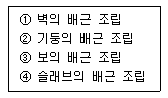
- ①-②-③-④
- ②-①-④-③
- ①-②-④-③
- ②-①-③-④
(정답률: 60%)
24. Prepacked concrete시공에 관한 기술 중 적합하지 않은 것은?
- 시공기계는 mortar mixer,agitator,mortar pump,주입관(안지름 20-50mm의 가스관)이 사용된다.
- 주입은 대개의 경우 펌프에 의한 압입방법을 이용한다.
- 주입관의 작업간격은 6m 이하로 한다.
- 주입은 하부로부터 순차적으로 하고 모르타르 윗면이 거의 수평면으로 유지되도록 천천히 행한다.
(정답률: 30%)
25. 건설공사 발주자의 위탁을 받은 대리인이 건설공사의 타당성 조사, 설계, 시공 등 전 과정에 참여하여 공기단축이나 공사비 절감을 위해 Project를 관리하는 계약방식을 무엇이라 하는가?
- Turn-Key
- Design-build
- Design-manage
- Construction Management
(정답률: 37%)
26. 지반내의 모래밀도를 측정하는 방법으로 가장 적합한 것은?
- 전기탐사법
- 베인테스트(Vane test)
- 표준관입시험(Penetration test)
- 딘월샘플링(Thin wall sampling)
(정답률: 69%)
27. 콘크리트의 중성화와 거리가 먼 것은?
- 수산화 칼슘
- 이산화탄소
- 탄산칼슘
- 질소
(정답률: 47%)
28. 다음 제자리 말뚝 공법중에서 기계굴삭공법이 아닌 것은?
- 리버스 서큘레이션공법
- 관입공법
- 보아홀공법
- 심초공법
(정답률: 22%)
29. 일반경쟁 입찰의 장점이 아닌 것은?
- 균등한 입찰참가의 기회부여
- 공사의 시공정밀도 확보
- 공정하고 자유로운 경쟁
- 공사비 저렴
(정답률: 55%)
30. 목재의 건조에 관한 설명 중 옳지 않은 것은?
- 자연건조법에 의할 때는 일찍 주문하여 그늘에서 건조한다.
- 대기건조법과 침수법은 오랜 시일이 필요없다.
- 직사광선을 받으면 뒤틀림, 갈라짐 등이 생긴다.
- 인공건조법은 보통 증기실, 열기실에서 건조한다.
(정답률: 알수없음)
31. 블록(Block)의 1일 쌓기 높이로 옳은 것은?
- 1.0m이하
- 1.5m이하
- 1.7m이하
- 2.0m이하
(정답률: 53%)
32. 창호 철물 중에 여닫이 문에 사용하지 않는 것은?
- 정첩
- 후로어힌지
- 레일(rail)
- 도아첵크
(정답률: 64%)
33. 흙을 파낸 후 토량의 부피 변화가 가장 큰 것은?
- 모래
- 보통흙
- 점토
- 자갈
(정답률: 42%)
34. 다음은 목재의 모접기(moulding)마무리의 단면이다. 게눈모란 어느것인가?
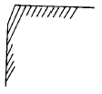
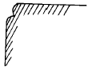
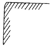
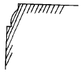
(정답률: 46%)
35. 굳지않은 콘크리트 성질에 관한 설명중 옳지 않은 것은?
- 피니셔빌리티란 굵은골재의 최대치수, 잔골재율, 골재의 입도, 반죽질기 등에 따라 마무리하기 쉬운 정도를 말한다.
- W/C가 클수록 컨시스턴시가 좋아 작업이 용이하고 재료분리가 일어나지 않는다.
- 블리딩이란 콘크리트 타설후 표면에 물이 모이게 되는 현상으로 레이턴스의 원인이 된다.
- 워커빌리티란 작업의 난이도 및 재료의 분리에 저항하는 정도를 나타내며, 골재의 입도와도 밀접한 관계가 있다.
(정답률: 알수없음)
36. 슬랩에서 4변 고정인 경우 철근배근을 가장 많이 하여야 하는 부분은?
- 짧은 방향의 주간대
- 짧은 방향의 주열대
- 긴 방향의 주간대
- 긴 방향의 주열대
(정답률: 30%)
37. 다음 재료중 용도가 다른 재료는?
- 스티로폴
- 유리섬유(glass wool)
- 경질우레탄폼
- 소성질석
(정답률: 22%)
38. 점토질과 사질지반을 비교한 것 중 옳은 것은?
- 투수계수는 점토가 크고 사질은 작다.
- 가소성은 점토가 없고 사질은 크다.
- 압밀속도는 점토는 느리고 사질은 빠르다.
- 내부마찰각은 점토는 크고 사질은 작다.
(정답률: 22%)
39. 알루미늄 새시에 관한 기술 중 옳지 않은 것은?
- 스틸 새시에 비해 내화성이 약하다.
- 알칼리에 강하므로 설치시 오염의 염려가 없다.
- 비중이 철의 약 1/3로서 여닫음이 경쾌하다.
- 녹슬지 않고 사용 연한이 길다.
(정답률: 50%)
40. 다음 그림과 같은 원목을 제재하려고 할 때 최대 몇 cm 각으로 제재할 수 있겠는가?
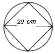
- 12cm
- 14cm
- 16cm
- 18cm
(정답률: 알수없음)
3과목: 건축구조
41. 철골 기둥의 주각부분 고정과 관련없는 것은?
- 클립 앵글(clip angle)
- 윙 플레이트(wing plate)
- 베이스 플레이트(base plate)
- 플랜지 플레이트(flange plate)
(정답률: 31%)
42. 강도설계법의 직사각형보에서 단면의 공칭모멘트(Mn)가 15tm일 때 극한모멘트(Mu) 값은?
- 9.5tm
- 10.75tm
- 13.5tm
- 14.3tm
(정답률: 13%)
43. 그림과 같은 내민보의 휨 모멘트도(B.M.D)로서 옳은 것은?
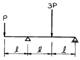
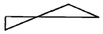
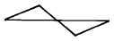
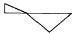
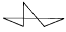
(정답률: 27%)
44. 시멘트블록조에서 기초보(기초벽)의 춤은 처마높이의 얼마 이상으로 하는가?
- 1/8
- 1/12
- 1/15
- 1/20
(정답률: 27%)
45. 벽돌조 내력벽에 개구부가 형성될 때 옳지 않은 것은?
- 각층의 대린벽으로 구획된 각벽에 있어서 개구부 폭의 합계는 그 벽길이의 1/2 이하로 해야 한다.
- 하나의 층에 있어서의 개구부와 그 직상층 개구부와의 수직거리는 60cm 이상으로 해야 한다.
- 개구부 상호간, 또는 개구부와 대린벽 중심과의 수평거리는 그 벽두께의 3배 이상으로 해야 한다.
- 폭이1.8m를 넘는 개구부의 상부에는 철근콘크리트 구조의 웃인방을 설치해야 한다.
(정답률: 25%)
46. 양단이 고정이고 높이가 3m인 H형강 기둥의 이론치(理論値) 좌굴길이는?
- 1.5m
- 2.1m
- 3.0m
- 6.0m
(정답률: 30%)
47. 벽돌의 치수 190㎜ x 90㎜ x 57㎜로 두께 2.5B 벽체쌓기를 하였을때 벽두께는(공간쌓기가 아님)?
- 430㎜
- 490㎜
- 510㎜
- 550㎜
(정답률: 54%)
48. 20 x 40㎝의 직사각형 단면의 기둥이 중심하중 80t, 모멘트(My)4t.m를 받는다면 부재단면에 일어나는 최대응력도로서 적당한 값은?
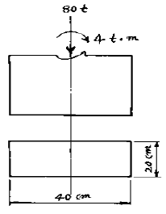
- 1⑤㎏/cm2
- 175㎏/cm2
- 193㎏/cm2
- 236㎏/cm2
(정답률: 50%)
49. 벽돌조에 관한 기술 중 옳지 않은 것은?
- 창문틀 설치시 선틀은 60cm 이내 간격으로 꺽쇠, 큰못 등으로 벽체에 고정한다.
- 창대벽돌은 윗면을 15° 정도의 경사로 옆세워 쌓는다.
- 공간벽 구조인 경우 연결재의 최대 수평거리는 50㎝를 초과해서는 안된다.
- 벽체 상단에는 춤이 벽두께의 1.5배 이상인 테두리보를 설치한다.
(정답률: 31%)
50. 강도설계법에서 휨부재 설계시 최대철근비(ρmax)와 최소철근비(ρmin)를 규정한 이유는?
- 가장 경제적인 부재를 설계하기 위하여
- 부재의 사용성을 증가시키기 위하여
- 시공의 편리성을 증가시키기 위하여
- 부재의 파괴에 대한 안정성을 확보하기 위하여
(정답률: 40%)
51. 그림과 같은 양단 고정보에서 B지점의 모멘트 MB의 값은?
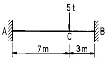
- 4.35tㆍm
- 5.15tㆍm
- 3.15tㆍm
- 7.35tㆍm
(정답률: 19%)
52. 아래 그림과 같은 구조물에서 보의 응력을 구하기 위해 양단의 지점을 어떻게 보는 것이 가장 합당한가? (단, 수평하중은 없다고 본다.)
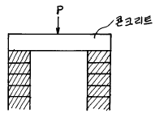
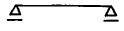
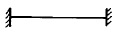
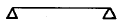
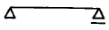
(정답률: 5%)
53. 천장을 장식겸 음향 효과가 있게 층단으로 꾸민 반자는?
- 건축판 반자
- 우물 반자
- 구성 반자
- 살대 반자
(정답률: 28%)
54. 그림과 같은 캔틸레버구조에서 고정단 A지점의 전단력은?
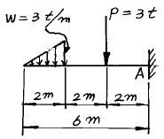
- 2t
- 4t
- 6t
- 8t
(정답률: 39%)
55. 4변 고정된 철근콘크리트 슬랩에서 장변의 길이가 8m일때 2방향 슬랩이 설계되려면 단변의 길이는?
- 1m 이상
- 2m 이상
- 3m 이상
- 4m 이상
(정답률: 29%)
56. 보의 고정하중 1t/m이고 활하중이 2t/m인 등분포하중을 받는 스팬=10m인 단순지지보의 극한설계모멘트는?
- 38.75 t· m
- 45.25 t· m
- 60.00 t· m
- 72.52 t· m
(정답률: 0%)
57. 건축구조의 분류에 따른 기술중 옳지 않은 것은?
- 가구식 구조는 각부재의 접합 및 짜임새에 따라 구조체의 강도가 좌우된다.
- 일체식 구조는 각 부분구조가 일체화되어 비교적 균일한 강도를 가진다.
- 조립식 구조는 경제적이나 공기가 길다.
- 조적식 구조는 조적 단위재료의 접착강도가 클수록 좋다.
(정답률: 50%)
58. 그림과 같은 연속보는?
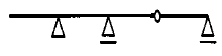
- 불안정
- 정정
- 1차 부정정
- 2차 부정정
(정답률: 13%)
59. 다음 중 서로 관계 깊은 사항의 조합으로 적당하지 않은 것은?
- 단면 2차 반경 - 좌굴하중
- 단면계수 - 휨응력도
- 단면 2차 모우멘트 - 주축
- 단면 1차 모우멘트 - 주응력도
(정답률: 17%)
60. 그림과 같은 3 hinge 원호형 아치의 정점에 4(t)의 집중하중이 작용했을 때 A점의 수평반력은?
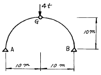
- 2t(栓)
- 3t(悛)
- 4t(栓)
- 5t(悛)
(정답률: 42%)
4과목: 건축설비
61. 오수의 정화방법중 물리적 처리 방법은?
- 스크린
- 부패조
- 산화조
- 소독조
(정답률: 17%)
62. 난방설비와 관련이 없는 용어는?
- 에어밸브
- 팽창탱크
- 익스펜션 조인트
- 드래프트챔버
(정답률: 34%)
63. 태양열 난방의 집열기 종류이다. 관련없는 것은?
- 평판식
- 집광식
- 진공글라스식
- 병렬식
(정답률: 10%)
64. 인터폰의 접속 방식에 의한 구분으로 볼 수 없는 것은?
- 모자식
- 토크식
- 상호식
- 복합식
(정답률: 40%)
65. 표준상태에서 저압 온수난방의 방열기 1m2 당 방열되는 열량(㎉/m2 h)은?
- 350㎉/m2 h
- 450㎉/m2 h
- 600㎉/m2 h
- 650㎉/m2 h
(정답률: 37%)
66. 대규모 설비에서 수직 배수관의 하저곡부(下低曲部)가까이 설치된 기구 트랩의 봉수(封水)파괴 원인은?
- 자기(自己)사이폰 작용
- 역압에 의한 작용
- 감압에 의한 흡인 작용
- 봉수의 증발
(정답률: 25%)
67. 수전설비용량의 추정과 가장 관련이 없는 것은?
- 수용율
- 부등율
- 부하율
- 온도특성율
(정답률: 37%)
68. 피뢰도체 및 피뢰도선은 전선,전화선 또는 가스관과 얼마이상의 거리를 두어야 하는가?
- 0.5m
- 1m
- 1.5m
- 2m
(정답률: 20%)
69. 그림에서 A점에 작용하는 수압은 얼마인가?
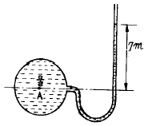
- 0.007㎏/cm2
- 0.07㎏/cm2
- 0.7㎏/cm2
- 7.0㎏/cm2
(정답률: 9%)
70. 구부리기 쉬우므로 공장 등의 전동기에 이르는 짧은 배선이나 승강기 배선에 사용되는 배선공사는?
- 애자 사용공사
- 목재 모울드 공사
- 금속관 공사
- 플렉시블 콘듀트공사
(정답률: 20%)
71. 고온수난방에 대한 설명 가운데서 옳지 않은 것은?
- 방열기는 보통온수에 비하여 작아도 된다.
- 팽창탱크는 위험을 막기위해 개방식을 쓴다.
- 강판제 보일러를 사용한다.
- 보일러와 동일한 높이의 바닥에 방열기를 설치하여도 온수순환이 가능하다.
(정답률: 25%)
72. 건축 전기설비에 관한 사항중 옳지 않은 것은?
- 전등,전열 동력은 교류를 사용한다.
- 전화,전기시계 통신설비는 고압의 직류를 사용한다.
- 저속 엘리베이터는 강전류용인 교류를 사용한다.
- 교류에 있어서 1초간 사이클 수를 주파수라 하고 우리나라는 60사이클을 사용한다.
(정답률: 34%)
73. 간선의 배선방식 중에서 평행식에 대한 설명 중 옳지 않은 것은?
- 배선이 간편하고 설비비가 적어진다.
- 대규모 건축물에 적당하다.
- 전압 강하가 평균화 된다.
- 각 분전반마다 배전반으로부터 단독으로 배선된다.
(정답률: 19%)
74. 과전류가 흐를때는 자동적으로 회로를 차단시켜 주고 재사용이 가능한 것은?
- 퓨우즈
- 노퓨우즈 브레이크
- 템블러 스위치
- 캐너피 스위치
(정답률: 28%)
75. 대변기에 접속하는 배수 수평지관의 최소 관경은 얼마 이상으로 하는가?
- 45㎜
- 65㎜
- 75㎜
- 100㎜
(정답률: 8%)
76. 양수펌프의 양수량은 고가수조 용량의 수량을 보통 몇분이내에 양수할수 있는 크기로 하는것이 바람직한가?
- 5분
- 30분
- 3시간
- 4시간
(정답률: 32%)
77. 공기조화방식 중 물을 열매로 사용하는 공조방식은?
- 단일덕트방식
- 이중덕트방식
- 멀티존방식
- 팬코일유닛방식
(정답률: 35%)
78. 그림과 같은 배관에서 대변기의 설치 위치로 가장 좋은 곳은?
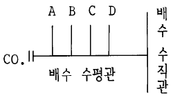
- A
- B
- C
- D
(정답률: 15%)
79. 정화조를 설치하는 경우 산화조 쇄석층의 깊이는?
- 900㎜ 이상
- 800㎜ 이상
- 700㎜ 이상
- 600㎜ 이상
(정답률: 30%)
80. 밸로우즈(Bellows)형 방열기트랩을 사용하는 이유는?
- 관내의 압력을 조절하기 위하여
- 관내의 증기를 배출하기 위하여
- 관내의 고형 이물질을 제거하기 위하여
- 방열기 내에 생긴 응축수를 환수시키기 위하여
(정답률: 24%)
5과목: 건축관계법규
81. 그림과 같은 대지에 주차전용 건축물을 건축할 경우 A점의 최고 높이는?
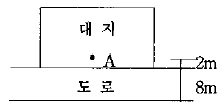
- 15m
- 18m
- 20m
- 30m
(정답률: 7%)
82. 특별피난계단 및 비상용 승강기의 승강장에 설치하는 배연설비의 구조에 관한 기준으로 옳지 않은 것은?
- 배연구 및 배연풍도는 난연재료로 하고, 화재가 발생한 경우 원활하게 배연시킬 수 있는 규모로서 외기 또는 평상시에 사용하는 굴뚝에 연결할 것
- 배연구에 설치하는 수동개방장치 또는 자동개방장치는 손으로도 열고 닫을 수 있도록 할 것
- 배연구가 외기에 접하지 아니하는 경우에는 배연기를 설치할 것
- 배연기에는 예비전원을 설치할 것
(정답률: 36%)
83. 다음 구조 중 방화구조로 볼 수 없는 사항은?
- 심벽에 흙으로 맞벽치기한 것
- 두께 2.0센티미터의 암면보온판 위에 석면시멘트판을 붙인 것
- 시멘트모르타르 위에 타일을 붙인 것으로서 그 두께의 합계가 2.5센티미터인 것
- 두께 1.2센티미터 이상의 석고판위에 석면시멘트판을 붙인 것
(정답률: 10%)
84. 건축물의 용도변경시 분류된 시설군이 아닌 것은?
- 주거 및 업무시설군
- 산업시설군
- 동물 및 식물관련시설군
- 문화 및 집회시설군
(정답률: 19%)
85. 건축허가를 신청할 때 에너지 절약 계획서의 제출이 의무화되지 아니한 건축물은?
- 50세대인 공동주택
- 바닥면적의 합계가 3천제곱미터인 의료시설 중 병원
- 바닥면적의 합계가 2천제곱미터인 소매시장(판매 및 영업시설)
- 바닥면적의 합계가 1천제곱미터인 실내수영장
(정답률: 25%)
86. 노외주차장의 출구 및 입구를 설치할 수 있는 곳은?
- 유치원의 출입구로부터 21m에 있는 도로부분
- 종단구배가 12%인 도로부분
- 육교에서 5m 떨어진 도로부분
- 초등학교 출입구로부터 20m의 도로의 부분
(정답률: 20%)
87. 인근 건축물과의 연결복도 또는 연결통로를 설치하는 경우 그 기준으로 옳지 않은 것은?
- 주요구조부가 내화구조일 것
- 마감재료가 불연재료일 것
- 밀폐된 구조인 경우 바닥면적의 1/20 이상에 해당하는 면적의 환기창을 설치할 것
- 너비 및 높이가 각각 5m 이하일 것
(정답률: 36%)
88. 부설주차장의 설치기준에서 설치대수의 산정기준을 시설면적으로 하지 않는 시설물은?
- 위락시설
- 업무시설
- 관람장
- 다세대주택
(정답률: 31%)
89. 공사감리자가 건축주에게 중간감리보고서를 제출하여야할 시기가 아닌 것은?
- 5층 이상 건축물인 경우 지상 5개 층마다 상부슬래브배근을 완료한 때
- 지붕슬래브배근을 완료한 때
- 기초공사시 철근배치를 완료한 때
- 최하층 슬래브 배근을 완료한 때
(정답률: 27%)
90. 단지조성사업 등에 관하여 교통영향평가를 받지 아니할경우의 노외주차장의 규모 기준은?
- 당해 사업부지면적의 6% 이상의 면적
- 당해 사업부지면적의 3% 이상의 면적
- 당해 사업부지면적의 0.6% 이상의 면적
- 당해 사업부지면적의 0.3% 이상의 면적
(정답률: 16%)
91. 건축물의 출입구에 설치하는 회전문은 계단이나 에스컬레이터로부터 몇 미터 이상의 거리를 두도록 되어 있는가?
- 2.0m 이상
- 2.5m 이상
- 3.0m 이상
- 3.5m 이상
(정답률: 20%)
92. 배연설비 설치 해당 건축물로서 배연설비를 하지 않아도되는 부위는?
- 최상층 거실
- 피난층 거실
- 방화구획이 설치된 경우
- 채광창이 설치되어 있는 부위
(정답률: 8%)
93. 노외주차장의 구조 및 설비기준에 관한 기술 중 옳은 것은?
- 주차대수 50대마다 1대의 자동차용승강기를 설치한다.
- 바닥으로부터 85cm의 높이에 있는 지점이 평균 100lux(룩스) 이상의 조도를 유지할 수 있는 조명장치를 설치하여야 한다.
- 경사로의 종단구배는 직선부분에서는 17%를 초과하여서는 아니된다.
- 주차대수 규모가 30대 이상인 경우의 경사로는 너비6m 이상인 2차선의 차로를 확보하거나 진입 차로와 진출 차로를 분리하여야 한다.
(정답률: 19%)
94. 동일한 대지 안에서 2동의 공동주택이 채광창이 없는 벽면과 측벽이 서로 마주보고 있을 때 일조등의 확보를 위해 건축조례에서 이들 사이를 서로 띄게 하는 최소거리는?
- 4m
- 6m
- 8m
- 10m
(정답률: 19%)
95. 오피스텔에 개별난방을 설치하는 기준으로 옳지 않은 것은?
- 보일러는 거실 외의 곳에 설치하되, 보일러를 설치 하는 곳과 거실 사이의 경계벽은 출입구를 제외하고는 내화구조의 벽을 구획할 것
- 보일러실의 윗부분에는 그 면적이 1m2 이상인 환기창을 설치할 것
- 보일러실의 윗부분과 아랫부분에는 지름 10㎝ 이상의 공기흡입구 및 배기구를 항상 열려있는 상태로 바깥공기에 접하도록 설치할 것
- 기름보일러를 설치하는 경우에는 기름저장소를 보일러실 외의 다른 곳에 설치할 것
(정답률: 12%)
96. 대지면적이 500 제곱미터이고 건폐율의 최고한도가 60 %인 지역에서 최대한도의 바닥면적으로 8층까지 건축할 수 있다면 이지역의 용적률은 얼마인가?
- 360 %
- 400 %
- 480 %
- 500 %
(정답률: 22%)
97. 다음중 건축물의 구조 및 재료에 관한 설명으로 부적합한것은?
- 건축물의 내부에 설치하는 피난계단의 마감재료는 불연재료로 하여야 한다.
- 건축물의 내부에서 계단실로 통하는 출입구의 유효너비는 0.9m 이상이어야 한다.
- 피난계단의 구조는 방화구조로 하여야 한다.
- 특별피난계단에서 건축물의 내부에서 노대 또는 부속실로 통하는 출입구에는 갑종방화문을 설치하여야한다.
(정답률: 42%)
98. 주요구조부를 내화구조로 하여야 하는 건축물로서 옳지 않은 것은?
- 의료시설중 장례식장 용도에 쓰이는 바닥면적 합계가 200m2 이상인 건축물
- 문화 및 집회시설중 전시장 및 동· 식물원 용도에 쓰이는 바닥면적의 합계가 400m2 이상인 건축물
- 위험물저장 및 처리시설 용도에 쓰이는 바닥면적의 합계가 500m2 이상인 건축물
- 창고시설 용도에 쓰이는 바닥면적의 합계가 500m2 이상인 건축물
(정답률: 17%)
99. 노상주차장의 구조 및 설비에 관한 기준으로 옳지 않은 것은?
- 주간선도로에 설치하여서는 아니된다.
- 너비 8m 미만의 도로에 설치하여서는 아니된다.
- 종단구배가 4%를 초과하는 도로에 설치하여서는 아니 된다.
- 주차대수규모가 20대 이상인 경우에는 장애인 전용주차구획을 1면 이상 설치하여야 한다.
(정답률: 18%)
100. 다음 중 건축법상의 용어정의에 대한 설명 중 옳지 않은 것은?
- 거실이란 건축물 안에서 거주· 집무· 오락 등을 위하여 사용하는 방을 말한다.
- 기존 건축물이 있는 대지 안에서 건축물의 높이를 증가시키는 것은 증축에 해당된다.
- 피난계단을 해체하여 수선 또는 변경하는 것은 대수선에 해당된다.
- 도로란 보행 및 자동차통행이 가능한 너비 3m 이상의 도로를 말한다.
(정답률: 27%)